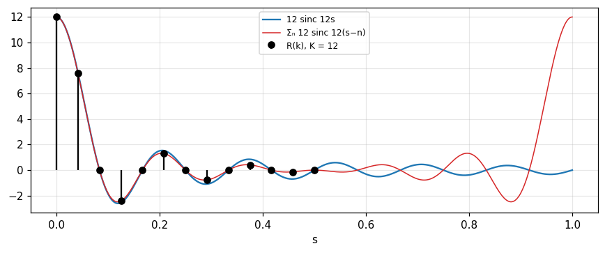
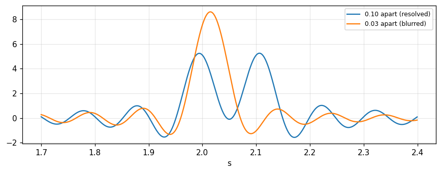

Closed-form integration, numerical transformation with the "slow" program, generating transforms from theorems, differentiation down to impulses, and measuring spectra with instruments.
Compute transforms by closed-form integration for rectangles, staircase functions, impulse trains, e^{-|x|}, the Gaussian, 1/x and \text{sgn}\,x.
Write and test the "slow" Fourier transform program, choose K and X, and understand why finite data give an aliasing error.
Generate new transforms from the convolution and derivative theorems (reduction to impulses).
Understand how spectra are measured: the radio-frequency spectrum analyzer and optical Fourier transform spectroscopy.
Check results numerically even when the algebra is done by hand.
Use the buttons, the dots or the ← → keys to move between slides.
PART 1/5
01
Integration in closed form
Situation: The transform pairs of the previous chapter were asserted without derivation, only "verifiable by evaluating the Fourier integral".
Complication: To generate new pairs we need ways of carrying out the transformation, and the most direct one is to evaluate the integral.
Resolution: A function that is zero over some range and simple elsewhere can be integrated; others need tricks (completing the square, contour integrals, limit sequences).
A map of the ways to obtain a transform
Rectangles, staircases, impulses
e^{-|x|}, the Gaussian, 1/x, \text{sgn}\,x
1/5 · Integration in closed form
Why this chapter
Many chains of argument in which the Fourier transform matters need no particular transform pair, yet carrying out a general argument with a special case in mind often serves as insurance against surprises (Bracewell, p. 136). The pairs used to illustrate the theorems were all asserted without derivation, which does not help when new pairs are needed. This chapter considers ways of carrying out the transformation.
1/5 · Integration in closed form
Four routes
Evaluate the integral \int f(x)e^{-i2\pi xs}dx directly (closed form).
Numerical transformation: a sum instead of an integral, including a short "slow" program and the FFT (chapter 11).
Generation from the basic theorems, starting from a few known pairs.
Extraction from tables.
The book notes that some classes of function will never be stumbled on by theorems, yet a variety of physically feasible functions prove accessible (p. 137).
1/5 · Integration in closed form
The rectangle function
When f(x)=\Pi(x) the transform is just the integral of a cosine over [-\tfrac12,\tfrac12] (Bracewell, p. 137):
At s=0.3: 0.8584 by both numerical integration and the formula.
1/5 · Integration in closed form
Staircase functions: sums of rectangles
If f is nonzero on several segments and constant within each, integration in closed form is again possible. For f(x)=\sum a_n\Pi\!\left(\frac{x-b_n}{c_n}\right), shift and similarity give F(s)=\sum a_nc_ne^{-i2\pi b_ns}\,\text{sinc}\,c_ns (p. 137). Such functions include staircases and Morse-code signals and can simulate any kind of variation as closely as desired (p. 138). Measured with three pulses (a,b,c)=(1,0,2),(0.5,3,1),(-1,-2,1) at s=0.3: real part 2.0508, imaginary part 0.7568.
A set of impulses: sifting gives a sum of exponentials
An even simpler case arises if f is zero almost everywhere: f(x)=\sum a_n\delta(x-b_n). Only the values of a_n\exp(-i2\pi xs) at x=b_n matter, and by the sifting theorem F(s)=\sum a_ne^{-i2\pi b_ns} (p. 138). Measured: simulating three impulses (a,b)=(2,-1),(-1,0.5),(0.5,2) by narrow rectangles of width 10^{-3} gives magnitude 3.4093 at s=0.3, exactly the exponential sum.
1/5 · Integration in closed form
When there is no general rule: the example e^{-|x|}
If f has some special functional form it may be possible to integrate, but no general rules can be given (p. 138). For f=e^{-|x|}, F(s)=2\int_0^\infty e^{-x}\cos2\pi xs\,dx=2\,\text{Re}\,\dfrac{1}{1+i2\pi s}:
Transform of e^{-|x|}
F(s)=\frac{2}{1+4\pi^2s^2}
At s=0.3: 0.4393 by numerical integration, by the real part and by the formula.
1/5 · Integration in closed form
The Gaussian: completing the square
For f=e^{-\pi x^2} write \pi x^2+i2\pi xs=\pi(x+is)^2+\pi s^2, take e^{-\pi s^2} outside, and use the known result that the infinite integral of \exp(-\pi u^2) is unity (p. 139). The result e^{-\pi s^2} = 0.7537 at s=0.3, matching the complex numerical integral.
1/5 · Integration in closed form
1/x: a semicircular contour integral
The infinite discontinuity at the origin makes the standard Fourier integral diverge, so consider the limit with the interval (-\epsilon,\epsilon) removed. Take a semicircle of radius R with a small indentation of radius \epsilon at the origin; no poles are enclosed so the contour integral is zero. As R\to\infty the fourth integral vanishes and the small arc contributes \pm i\pi according to the sign of s; the pair in the limit is (p. 139):
Pair in the limit
\frac1x\ \supset\ -i\pi\,\operatorname{sgn}s
Measured: cutting at |x|\le10^4 the imaginary part is -3.141 at s=0.3, i.e. -\pi.
1/5 · Integration in closed form
\text{sgn}\,x: a sequence approaching the limit
This is the previous example in reverse: the Fourier integral fails to exist in the standard sense because the function is not absolutely integrable. Consider the sequence \exp(-\tau|x|)\text{sgn}\,x as \tau\to0; the transform is \dfrac1{\tau+i2\pi s}-\dfrac1{\tau-i2\pi s}, tending to 1/i\pi s (p. 140). Measured with \tau=10^{-3}, s=0.3: it differs from the limit by only 3.0e-07.
Pair in the limit
\operatorname{sgn}x\ \supset\ \frac{1}{i\pi s}
1/5 · Integration in closed form
Self-check, part 1
What is the transform of \sum a_n\Pi[(x-b_n)/c_n]?
Why does \text{sgn}\,x need a limit sequence?
What result is needed after completing the square for the Gaussian?
Hints: \sum a_nc_ne^{-i2\pi b_ns}\text{sinc}\,c_ns; because it is not absolutely integrable; the integral of e^{-\pi u^2} is 1.
PART 2/5
02
Numerical transformation and the limits of real data
Situation: Measured data are given at discrete values of the independent variable, over a finite range, and contain errors.
Complication: Those limitations fix the highest frequency, the smallest frequency step and the number of meaningful decimals.
Resolution: The degrees of freedom are 2X/\Delta x; the maximum frequency is 1/2\Delta x; the step is \Delta s=1/2X.
Limits: maximum frequency, frequency step, degrees of freedom
The slow Fourier transform program
Numerical examples and the aliasing error
2/5 · Numerical transformation and the limits of real data
Three limitations of data
Data are spaced \Delta x: Fourier components with periods shorter than 2\Delta x hardly carry information, so computing beyond about (2\Delta x)^{-1} is unnecessary.
Data are given only for -X<x<X: F(s) need not be calculated at points closer than \Delta s=(2X)^{-1}.
Data contain errors: the power spectrum of the error sets a limit on the meaningful decimals.
That is Bracewell, pp. 140 to 141. If fine detail in F(s) requires a finer interval than (2X)^{-1}, measurements of f(x) must extend beyond x=X.
2/5 · Numerical transformation and the limits of real data
Degrees of freedom
A function f(x) tabulated at interval \Delta x over a range 2X possesses 2X/\Delta x degrees of freedom, which should be comparable with the number of data computed for the transform (p. 140; chapters 10 and 14 explore it in detail). Example \Delta x=1, X=6: 12 degrees of freedom, maximum frequency 0.5, frequency step 0.0833.
2/5 · Numerical transformation and the limits of real data
A finite sum replaces the integral
Let f(x) be represented by values at x=n, n=-X\ldots X. Before transforming we must assume how f behaves outside the range: suppose f=0 where |x|>X. Then \sum_{-X}^{X}f(n)e^{-i2\pi sn} approximates F(s); real and imaginary parts give two separate sums C=\sum f(n)\cos2\pi sn and S=\sum f(n)\sin2\pi sn (p. 141), with F=C-iS. Each value of s needs 2X+1 terms, which is a lot of computing; by symmetry summation from 0 to X suffices.
2/5 · Numerical transformation and the limits of real data
Cooley and Tukey, Lanczos and Gauss
In the mid-sixties the signal processing community was profoundly influenced by Cooley and Tukey (1965): divide the data set in two, take the separate transforms and combine them, and the work is roughly halved; further subdivision is better still. Lanczos had published this in 1942, and Gauss used the idea in 1805 for numerical analysis of cometary data. After some years the name "Cooley-Tukey algorithm" gave way to Fast Fourier Transform (p. 141).
2/5 · Numerical transformation and the limits of real data
One command for the FFT, but the black box needs understanding
The single MATLAB statement F=\text{fft}(f) generates the complex transform of a sequence virtually instantly, whether the number of elements has factors, is prime or is a power of 2 (p. 142). The notebook checks a prime length of 13: the FFT differs from the slow sum by at most 5.5e-15. The book warns that the canned black box cannot safely be approached without understanding its content; many students run an FFT package prematurely and are perplexed when rectangle data do not give the expected sinc shape or amplitude (p. 142).
2/5 · Numerical transformation and the limits of real data
Why the "slow" transform is still used
Faster computers make the direct sum fast enough for many purposes.
Students can do numerical work before confronting the awkward subtleties of the fast algorithms.
Confirming entries in the Pictorial Dictionary and gaining experience with theorems.
Catching sign errors or factors of 2 or \pi in hand algebra faster than by careful repetition of a derivation.
Per Bracewell, p. 142. The Hartley transform (chapter 12) also achieves all these purposes and gives real output from real input.
2/5 · Numerical transformation and the limits of real data
The slow Fourier transform program
Let f(x) be given at integer x=-X\ldots X (rescale if needed). Since the real and imaginary parts do not come at integer s, an integer index k from 0 to K is used with s=k/2K; the maximum frequency is 0.5. For each k, sum f(x)\cos(2\pi sx) and f(x)\sin(2\pi sx) over all x (pp. 142 to 143). Only k\ge0 is needed since for negative k the transform is the complex conjugate (about half the running time of the standard FFT). Gross check: R(0) equals the sum of the data and I(0)=0.
2/5 · Numerical transformation and the limits of real data
Choosing K: critical spacing, finer, and a narrow band
With K=X we get X+1 values of R and X values of I (not counting I(0)=0), exactly the 2X+1 independent constants justified by the data; the spacing 1/2X is called the critical spacing. Measured: reconstructing the data from these R,I deviates by 2.2e-16. K=4X adds interleaved points that make the graph smoother without extra information; letting k run from 0 to X/2 doubles the spacing, good for debugging. With k from 5X to 7X and K=12X one examines a band around s=0.25 at 12 times the critical resolution (\Delta s=1/24X); the standard fast algorithms do not offer this flexibility (p. 143). Measured: 13 points at step 0.00694, deviating from a zero-padded FFT by only 4.8e-15.
2/5 · Numerical transformation and the limits of real data
Self-check, part 2
Data spaced 1 over [-6,6]: maximum frequency and frequency step?
Why is K=X enough to reconstruct the data?
What happens if K is raised to 4X?
Hints: 0.5 and 1/12; because R and I give exactly 2X+1 independent constants; interleaved points with no extra information.
PART 3/5
03
Numerical examples and the aliasing error
Situation: To trust a program, test it on data with a known answer: the rectangle \Pi(x/12) has transform 12\,\text{sinc}\,12s.
Complication: Does the result match, and if not, where does the difference come from?
Resolution: The difference comes mainly from overlapping replicas 12\,\text{sinc}\,12(s-n), and denser data reduce the relative error.
Example: 13 values, K=12
K=24, zero padding, twice as dense data
Aliasing: R(s)=\sin12\pi s\cot\pi s
3/5 · Numerical examples and the aliasing error
The example data
The input is 13 values of f(x)=\Pi(x/12) at x=-6\ldots6: eleven ones in the middle and two values of \tfrac12 at the ends (the mean value at the discontinuity). The sum is 12 so R(0)=12, equal to F(0). Choosing K=2X=12 gives half the critical frequency spacing (p. 144).
3/5 · Numerical examples and the aliasing error
Result with K=12
Since f is even, all I(k) vanish. The values of R(k): R(1) = 7.596, R(3) = -2.414, R(5) = 1.303, R(11) = -0.132, while the even-index R(k) for k\ge2 are 0 (p. 144). Against 12\,\text{sinc}\,12s=7.639 at s=1/24, R(1) differs by -0.57 percent.

Figure 1. The slow program with 13 rectangle values and K = 12: the points R(k) lie on the red curve (sum of replicas), slightly off 12 sinc 12s (blue) because the replica 12 sinc 12(s−1) overlaps; at s = 1, R returns to 12.
3/5 · Numerical examples and the aliasing error
K=24: a quarter of the critical spacing
Keep the data unchanged and choose K=24: values at the earlier frequencies are unchanged, and the interleaved frequencies give a smoother graph (p. 144). R(1) = 10.788 and R(3) = 3.555 are the new interleaved values, while R(2) = 7.596 coincides with R(1) of the previous run (s=1/24).
3/5 · Numerical examples and the aliasing error
Zero padding does not change the transform
Change X to 12 and pad the original data to 25 values with zeros at both ends, keeping K=24: the transform values are unchanged (p. 144). Indeed the added terms are all zero. Measured: the maximum difference between the two computations is 0.
3/5 · Numerical examples and the aliasing error
Twice as dense data: \Pi(x/24)
Keep X=12 but use 25 values starting and finishing with \tfrac12 and 23 ones between (equivalent to \Pi(x/24), transform 24\,\text{sinc}\,24s), and keep K=24 (p. 144). Then R(1) = 15.257; the difference from 24\,\text{sinc}\,0.5 is only -0.14 percent, an improvement by a factor 4 over the first example.
3/5 · Numerical examples and the aliasing error
The absolute error does not shrink with k
Bracewell asks us to verify that the absolute error does not diminish as k increases (p. 144). The reason will be clear on the next slide: the error has the form \sin(2\pi Xs)\left[\cot\pi s-\frac1{\pi s}\right], whose envelope |\cot\pi s-1/\pi s| does not depend on X, for instance 0.2732 at s=0.25. So denser data make the signal larger in proportion to X while the error keeps its amplitude, hence the relative error falls.
3/5 · Numerical examples and the aliasing error
The origin of the discrepancy: overlapping replicas
Letting k run to 2K makes s reach 1.0 and R climbs back to the value it had at s=0 (p. 144). The discrepancy from 12\,\text{sinc}\,12s arises mainly from the overlapping replica 12\,\text{sinc}\,12(s-1), and in general the actual value of R is \sum_n12\,\text{sinc}\,12(s-n). Measured: R at s=1 is 12; the sum truncated at |n|\le20000 at s=1/24 is 7.596, equal to R(1) 7.596 above.
Replicas add up
R(s)=\sum_{n=-\infty}^{\infty}12\operatorname{sinc}12(s-n)=\sin 12\pi s\,\cot\pi s
3/5 · Numerical examples and the aliasing error
A lesson: phase depends on the origin, power does not
With many waveforms the choice of origin is unimportant because the wave shape does not depend on what instant is chosen as origin. The real and imaginary parts, heavily affected by the choice of origin, are not needed all that often; instead R^2+I^2 is an intrinsic property of the waveform, and choice of origin affects the phase \arctan(I/R) only by a linear phase shift with frequency (p. 143). Measured: moving the origin of the rectangle data by 3 units keeps R^2+I^2 at s=0.1 equal to 3.273 (unchanged) and adds phase -108 degrees.
3/5 · Numerical examples and the aliasing error
Self-check, part 3
Why is R(0)=12 in the example?
Does zero padding change F(s)?
Why does denser data improve the relative error but not the amplitude of the absolute error?
Hints: the sum of the data equals F(0); no; the error is aliasing with an amplitude independent of X.
PART 4/5
04
Generating transforms from the theorems
Situation: A few pairs are enough to build a whole dictionary of transforms with theorems.
Complication: Polygonal, piecewise-linear or piecewise-polynomial functions can be reduced to impulses by successive differentiation.
Resolution: Convolution with impulses and the derivative theorem are the two main tools; integration constants are fixed by the area and other constraints.
Convolution with impulses: polygonal functions
Continued differentiation down to impulses
The parabolic pulse (1-x^2)\Pi(x/2)
4/5 · Generating transforms from the theorems
The principle
A wide variety of functions, especially in theoretical work, can be transformed if some property permits a simplifying application of a theorem (Bracewell, p. 145). Many theorems take the form "if f and F are a pair then g and G are also", so from a known pair new ones are generated.
4/5 · Generating transforms from the theorems
A polygonal function = triangle * set of impulses
If we perceive that a polygonal function is the convolution of the triangle function and a set of impulses, we handle the impulses as above and multiply by the transform of the triangle (Fig. 7.1, p. 145):
Example: \Lambda(x)*\mu(x), with \mu(x)=\tfrac12\delta(x+\tfrac12)+\tfrac12\delta(x-\tfrac12), is the trapezoidal pulse with transform \text{sinc}^2s\cos\pi s (p. 145). At s=0.3 numerical integration and the formula both give 0.4331.
4/5 · Generating transforms from the theorems
Continued differentiation for segmentally linear functions
There is a special application of the derivative theorem widely used for switching waveforms. For a segmentally linear function the first derivative contains impulses; we remove the impulse and differentiate again (Fig. 7.2, p. 146), leaving only a set of impulses \sum C_n\delta(x-c_n). If the first derivative contains a further set \sum B_n\delta(x-b_n) and the original contains \sum A_n\delta(x-a_n) then (p. 146):
The simplest example: \Lambda''(x)=\delta(x+1)-2\delta(x)+\delta(x-1), with transform 2\cos2\pi s-2=-4\sin^2\pi s. Dividing by (i2\pi s)^2 gives \text{sinc}^2s, as known. Measured at s=0.3: it deviates by 0.0e+00 from \text{sinc}^2(0.3).
4/5 · Generating transforms from the theorems
The parabolic pulse: two differentiations
Consider f(x)=(1-x^2)\Pi(x/2). The first derivative is -2x\,\Pi(x/2) (no impulses since f is continuous at \pm1, as f(\pm1)=0). The second derivative is 2\delta(x+1)-2\Pi(x/2)+2\delta(x-1), with transform 4\cos2\pi s-4\,\text{sinc}\,2s (pp. 146 to 147). At s=0.3 this side is -3.254; multiplying F(0.3) computed by integration by (i2\pi s)^2 gives the same number.
4/5 · Generating transforms from the theorems
The integration constants
Dividing by (i2\pi s)^2 gives F(s)=\dfrac{4\cos2\pi s-4\,\text{sinc}\,2s}{(i2\pi s)^2}+K_1\delta(s)+K_2\delta'(s) with K_1 and K_2 integration constants, since a constant or a linear ramp could be added to f without changing the second derivative. Integration of the given pulse shows no additive constant or ramp, so K_1=K_2=0 (p. 147):
At s=0.3: 0.9159. The limit s\to0 is 1.3333, equal to the area \int(1-x^2)dx=\tfrac43.
4/5 · Generating transforms from the theorems
Which technique when
Function
Technique
Piecewise constant
Sum of rectangles, p. 137
Set of impulses
Sifting, p. 138
Polygon
Triangle * impulses, p. 145
Piecewise linear or polynomial
Continued differentiation, pp. 145 to 147
Gaussian, exponential
Completing the square, p. 139
Infinite discontinuity
Contour integral or limit sequence, pp. 139 to 140
4/5 · Generating transforms from the theorems
Self-check, part 4
Why does the trapezoid have transform \text{sinc}^2s\cos\pi s?
How many differentiations reduce (1-x^2)\Pi(x/2) to impulses?
Why can there be constants K_1\delta(s) and K_2\delta'(s)?
Hints: triangle * two half-strength impulses; twice (leaving a rectangle and impulses); because the function loses a constant and a slope on twofold differentiation.
PART 5/5
05
Measuring spectra and selected problems
Situation: Spectra can be determined mathematically from waveforms, but the history of measuring them begins with Newton and his Opticks of 1704.
Complication: Today spectra are measured with prisms, gratings, interferometers and digital spectrum analyzers.
Resolution: Fourier transform spectroscopy measures the autocorrelation of the signal and transforms it to obtain the power spectrum.
The historical sequence of measuring spectra begins with Isaac Newton in his Opticks of 1704. Spectra are still produced by prisms and other optical devices, especially diffraction gratings and Fabry-Perot interferometers (Bracewell, p. 147).
5/5 · Measuring spectra and selected problems
The radio-frequency spectrum analyzer
In radio, radar, television and laboratory instruments, spectrum analyzers display signal strength versus frequency. A radio receiver is a primitive spectrum analyzer as the tuning knob is turned. A modern instrument samples the waveform with conventional circuitry, performs fast spectral analysis by computer and displays or stores the spectrum (p. 147). By 1990 fully programmable instrumentation based on the Hartley transform was commercially available with picosecond resolution (p. 147).
5/5 · Measuring spectra and selected problems
A bank of fixed-frequency filters
An alternative is a bank of fixed-frequency filters, implemented by computer, as at the SETI Institute searching for radio signals from nonsolar planets over a 20 MHz band with resolution as fine as 1 Hz (p. 147).
5/5 · Measuring spectra and selected problems
Optical Fourier transform spectroscopy
This way is not in the line of evolution from electric circuit practice, and is of particular importance for detecting and identifying molecules by their infrared spectra (p. 148). If we can determine the temporal autocorrelation of an electromagnetic signal s(t) then Fourier transformation gives the power spectrum. Split the signal into two beams to form s(t)s(t+\tau) with variable delay \tau: a mylar film at 45 degrees lets one beam continue straight and reflects the other at a right angle, to a plane mirror and back. Moving the mirror away adds delay.
5/5 · Measuring spectra and selected problems
Resolution and band covered
With a maximum delay \tau_{\max} a spectral resolution bandwidth of about 1/2\tau_{\max} is achieved; the band covered extends to a high frequency 1/2\Delta\tau, where \Delta\tau is the mirror step (p. 148); these are the limits \Delta s=1/2X and s_{\max}=1/2\Delta x met earlier. Measured with two lines of equal strength, \tau_{\max}=10 and \Delta\tau=0.1 (resolution 0.05, band 5): lines separated by 0.1 are resolved (2 maxima), lines separated by 0.03 are not (1 maximum).

Figure 2. Spectrum from a finite autocorrelogram (τmax = 10): two lines 0.10 apart give two peaks, two lines 0.03 apart blur into one.
5/5 · Measuring spectra and selected problems
Aliasing in the interferometer
A line beyond 1/2\Delta\tau folds back into the lower band. Measured: a line at 6 with \Delta\tau=0.1 appears at 4, exactly 1/\Delta\tau-6, i.e. 10-6; this is the same aliasing met in sampling (module 13).
5/5 · Measuring spectra and selected problems
The autocorrelogram is even, the cross-correlogram is not
Positive delays alone suffice since the autocorrelation is even (the time-averaged s(t)s(t+\tau) equals that of s(t)s(t-\tau)). But if \tau is varied from positive to negative the origin of the autocorrelogram is apparent in the presence of small maladjustments (p. 148). If a known spectrum such as a black-body's is used and a transparent sample placed in one beam, a cross-correlogram is recorded, not an even function; Fourier transformation delivers a complex result from which permittivity and conductivity, or refractive index and absorption coefficient, follow over the full spectral range: a richer result than a simple absorption spectrum. An opaque specimen can serve as the moving mirror to obtain the complex reflection coefficient (Bell, 1972; p. 148).
5/5 · Measuring spectra and selected problems
Problems 1 to 4: numerical checks
Problem 1 (p. 149): the exact relation \int x^2f\,dx=-F''(0)/4\pi^2 can be the basis for a numerical check of R(k): the second moment \sum x^2f(x) must agree with -R''(0)/4\pi^2. Measured with f=e^{-\pi(n/5)^2}: \sum n^2f = 19.894, and from the second difference of R at the origin 19.894. Problems 2 and 3: \cos\pi x^2\supset(\cos\pi s^2+\sin\pi s^2)/\sqrt2 and e^{i\pi x^2}\supset\sqrt i\,e^{-i\pi s^2}; at s=0.3 the first value is 0.8763, and the phase of the second at s=0 is 45 degrees. Bracewell recommends thinking of a numerical check to catch a missing factor such as \sqrt2.
5/5 · Measuring spectra and selected problems
Problems 5, 7, 8, 9, 10
Problem 5: f=\Lambda(x/16)+\Lambda(x/8+1) has F=16\,\text{sinc}^216s+8\,\text{sinc}^28s\,e^{i2\pi8s}; 33 values with the slow program (\Delta s=1/64) give R(0) = 24 and a largest deviation from the formula of 0.06. Problem 7: the product \prod_{n\le N}(1-s^2/n^2) does not approach a Gaussian but \text{sinc}\,s: at s=0.3 it is 0.8584 for N=10^5, at s=1.5 it is -0.2122 (negative, a Gaussian is positive). Problem 8: the seven numbers F_k of the weekday data (read from the OCR text as 5, 4, 9, 8, 7, 6, 10): F_0 = 49, |F_1| = 3.396. Problems 9 and 10: for f=\Lambda(x/a-1), a=2, s=0.3: sine transform -0.5985, cosine transform -0.8238 (definitions F_c=2\int_0^\infty f\cos, F_s=2\int_0^\infty f\sin).
5/5 · Measuring spectra and selected problems
Self-check, part 5
Which quantity does the interferometer measure before transforming to obtain the spectrum?
Why does the cross-correlogram give more information than an absorption spectrum?
What function does \prod(1-s^2/n^2) converge to?
Hints: the autocorrelation; because the result is complex (amplitude and phase); \text{sinc}\,s.
SUMMARY
Takeaways
Closed-form integration works for segmented functions, impulses, exponentials and the Gaussian; 1/x and \text{sgn}\,x need a contour integral or a limit sequence.
Finite data give s_{\max}=1/2\Delta x, \Delta s=1/2X and 2X/\Delta x degrees of freedom.
The "slow" transform is a few lines of code that let you choose K and zoom into a band; its error is mainly overlapping replicas.
Repeated differentiation reduces piecewise linear or polynomial functions to impulses; integration constants are fixed by the area and other constraints.
Fourier transform spectroscopy measures the autocorrelation and transforms it into the spectrum.
📜 Theory & historical background
Lanczos published the idea of dividing the data in 1942, Gauss had used it in 1805 for cometary data, and Cooley and Tukey (1965) brought it to the signal processing community; Buneman showed that pretabulating \sin\theta and \tan\frac{\theta}{2} was faster (Bracewell, p. 141). Isaac Newton started spectrum measurement in his Opticks (1704) (p. 147).
Standard libraries: IMSL (1980), NAG (1980) and Numerical Recipes (Press et al., 1990); high-level software: LINPACK, MATHEMATICA, FORTRAN 90 and MATLAB (pp. 141 to 142, 149).
🔎 Real-world case study
Two closely spaced lines. An interferometer records the autocorrelation of light containing two lines of equal strength, with maximum delay \tau_{\max}=10 and step \Delta\tau=0.1. The resolution is 0.05 and the band reaches 5. Two lines separated by 0.1 (twice the resolution) show up as 2 maxima; two lines separated by 0.03 blur into 1. To separate the second pair one must increase \tau_{\max}, i.e. lengthen the data, just as f(x) must be measured far beyond X if F(s) has fine detail. If the source has a line at 6, the step \Delta\tau=0.1 folds it back to 4: a typical aliasing error.
The notebook generates its own data in code, so no external files are needed. Every number on this page is printed by the notebook and cross-checked with two independent methods.
⚠️ Common misreadings
"Zero padding changes the transform."
The added terms are zero so the transform at the same s is unchanged (difference 0); padding only makes \Delta s finer if we pick K accordingly (p. 144).
"A larger K gives more information."
K=4X only adds interleaved points; the number of independent constants remains 2X+1 (K=X already reconstructs the data, deviation 2.2e-16).
"The difference from the exact sinc disappears with more samples."
The absolute error's amplitude does not depend on X (envelope 0.2732 at s=0.25); only the relative error falls (-0.57 percent then -0.14).
"The product \prod(1-s^2/n^2) tends to a Gaussian (central limit theorem)."
It tends to \text{sinc}\,s (0.8584 at 0.3 and -0.2122 at 1.5, negative); it only looks Gaussian for very small s (problem 7, p. 150).
✅ Self-check quiz
Click an answer to grade it immediately and read the explanation. Results are not saved.
References
R. N. Bracewell, The Fourier Transform and Its Applications, 3rd ed., McGraw-Hill, 2000, chapter 7 (pp. 136 to 150).
Works cited by chapter 7: Bell (1972), Bracewell (1986), Cooley and Tukey (1965), IMSL (1980), NAG (1980), Press et al. (1990).
The content was written with AI assistance (Claude) and then checked. Every number is produced by a Jupyter notebook and cross-checked by two independent methods; page citations come from the OCR text of the two source books. Mistakes may remain, so please report them.
R. N. Bracewell, The Fourier Transform and Its Applications, 3rd ed., McGraw-Hill, 2000.
M. Barkat, Signal Detection and Estimation, 2nd ed., Artech House, 2005.
This site only summarises, explains and checks numbers; please read the original books through a library or the publisher.
Contribute
Report errors, suggest modules or translations in the GitHub repository, and fork or clone it for your own study. Please credit the source when sharing.